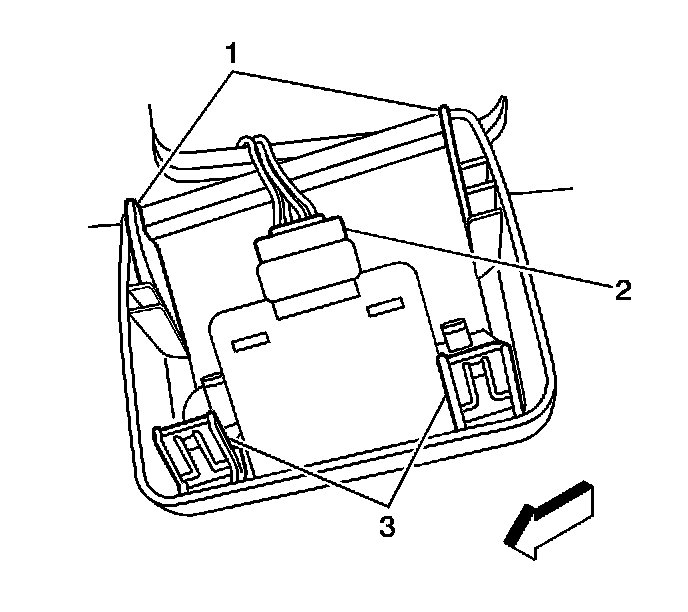

Parking Assist Warning Indicator: Service and Repair
Information Center Telltale Assembly Replacement
Removal Procedure

1. Pull downward on the front of the rear park assist (RPA) bezel in order to release the retaining clips (3).
2. Disconnect the electrical connector (2).
3. Remove the RPA tell tale indicator from the bezel.
Installation Procedure
1. Install the RPA tell tale indicator into the bezel.
2. Connect the electrical connector (2).
3. Locate the rear bezel hook retainers (1) into the headliner assembly.
4. Push upward on the front of the RPA bezel in order to secure the retaining clips (3).